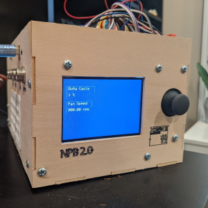
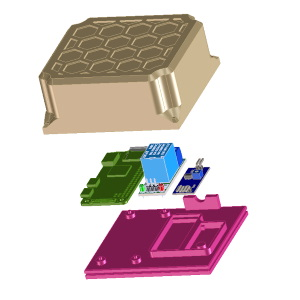
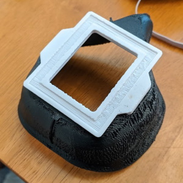

Like many people during quarantine, we got really into exotic plants in my household. The problem was we also have cats, and cats like to munch on plants, which is good for neither plants nor cats. Also, many of the plants we got had specific humidity, temperature, and light requirements. As a project, I decided to make a humidity controlled greenhouse. I made a control unit powered by an Arduino with a simple, joystick based user interface. The user is able to set humidity and fan speed, as well as control when lights turn on and off. It was a great project, and got me to learn about I2C, preprocessing sensor data before using it, and how to make a user interface for small devices.
We bought a Giant Monstera from Arium to decorate our front hallway. It adds a fun jungle feel, but it's too high up to get up to regularly to water. My solution was to create an internet-connected device to automatically water the monstera as needed. I used a raspberry pi to control a relay which powers a pump to supply water. A probe checks the drip tray to stop watering once it's wet. I followed a tutorial to wrote a Python program to control everything, and to dynamically update a webpage to control the water supply. Github link here
Early in the pandemic, there was a shortage of N-95 masks. Surgical or cloth masks were the alternative, but they provide poor protection compared to a proper mask. I realized that the filters used in Roomba vacuum robots were compact HEPA filters that could come close to matching N-95 performance. I designed a TPU mask and ABS frame that could be easily 3D printed and fit tightly to the face to provide consistent protection. I even learned to sew to create cloth covers for them. I was able to supply my family with masks, including my brother who works in a COVID testing lab in Seattle.
